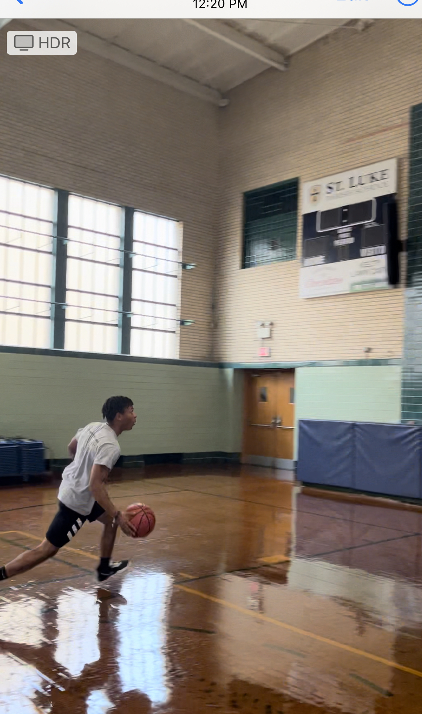
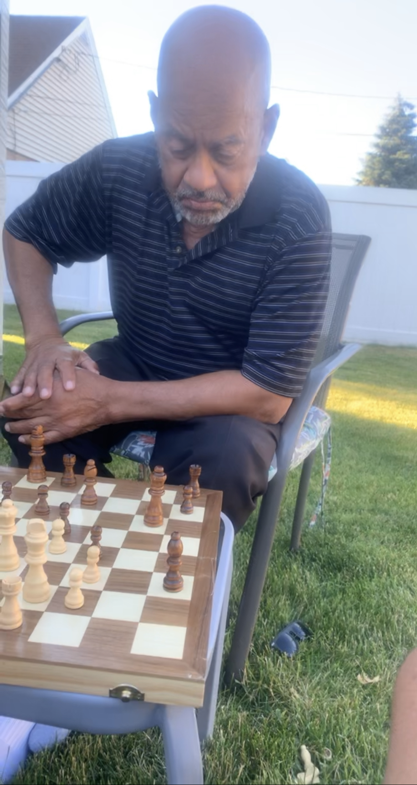

Basketball
Ever since I was a child, I've always loved basketball. Whether if it was watching my favorite sports' team The Chicago Bulls on tv, or playing with friends, I just loved the art of basketball. For this reason, I would often convince my mom to put me on Travel Basketball teams, so I can get better at the sport. Today, I am the captain of my intramural basketball, and I continue to love playing the sport of Basketball.

Chess
During the sophmore year of high school, I would often lose to my best friend who is very skilled at Chess. For this reason, in order to get better, I joined the chess club at my high school. After playing multiple games, I've grown to like playing chess and have improved playing it as well. Today, I often visit my Grandpa to play chess. Even though I rarely win, I enjoy the time I get to spend playing with him. Below, there is a description list of the different chess pieces and their moves. I hope you can learn how to play as well!
- King(1)
- Moves from square to neighboring square
- Rook(2)
- Moves in its row or column
- Bishop(2)
- Moves diagonally
- Queen(1)
- Moves like Rook or Bishop
- Knight(2)
- Moves in direction shaped like "L"
- Pawn(8)
- Moves one square straight ahead, or two squares if it is the first moves
